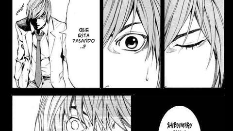
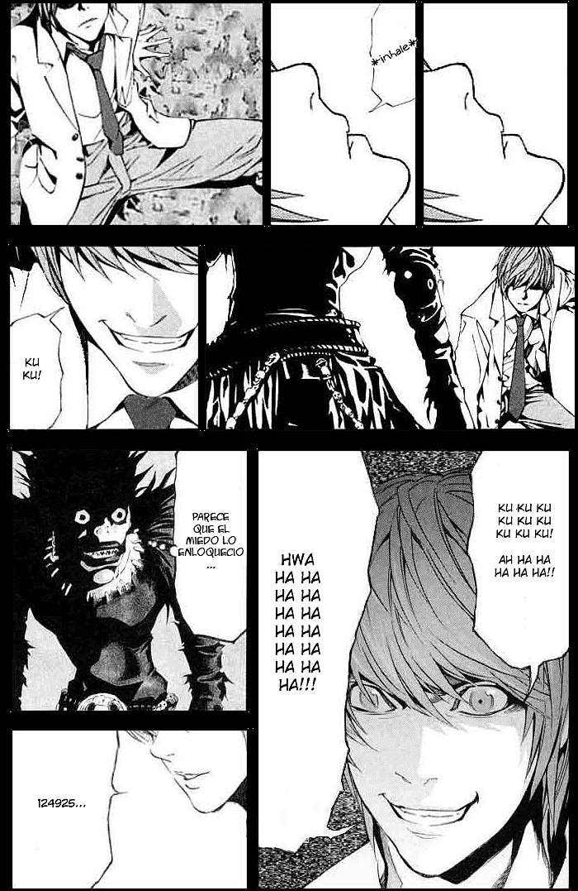
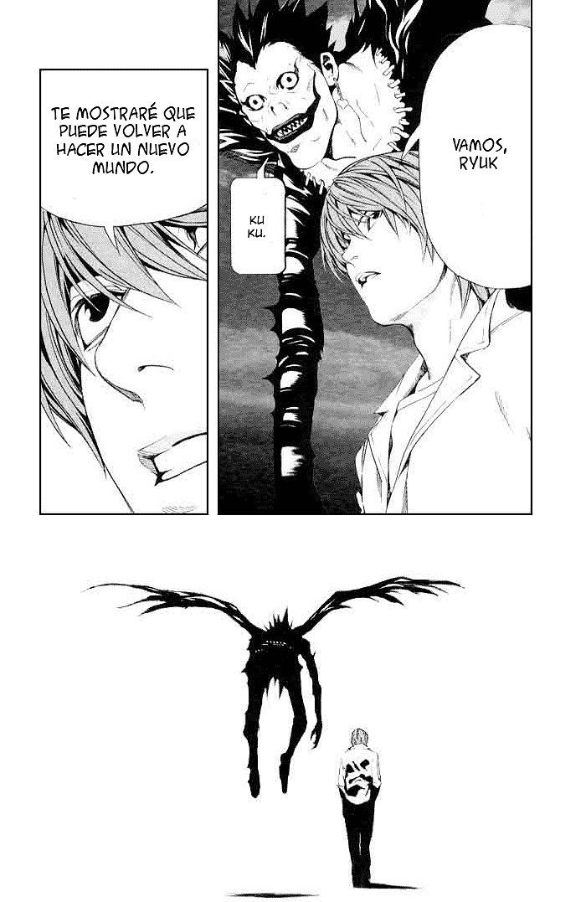

¿que pasaria si te dijera que existe un final alternativo de death note donde kira gana? la historia
nos situa mucho tiempo en el futuro mostrandonos a un ligth yagami envejecido, un ligth que habia sido capaz de cumplir
con su objetivo de acabar con todos los criminales del mundo.
de la nada ligth lanza un comentario inesperado "matame Ryuk, estoy cansado de una vida donde solo mato personas, matame con tu death note."

desconcertado por aquel comentario, Ryuk pregunta "¿es el fin de la diversion?" a lo que ligth contesta "si, lo es." pero
la historia no acaba aqui. luego vemos a un ligth totalmente rejuvenecido, teniendo la misma edad con la que empezó a matar con la death note.
y justo en frente de el, la figura de un shinigami le comenta "bienvenido al mundo shinigami."
a lo que instantaneamente ligth recuerda algo clave que ryuk mencionó "al morir si has usado la death note no iras al cielo ni al infiero"
y luego una voz de fondo dice "kurou otoharada, ataque al corazón" y rapidamente ligth sufre un ataque al corazón.
ligth no tardaria en darse cuenta de lo que estaba sucediendo, Ryuk le comenta que moriria la misma cantidad de veces que mato a alguien con la death note.

ligth realmente no puede creer lo que se esta sucediendo, a lo que Ryuk lanza un pequeño comentario "¿enserio creiste que podias ser un shinigami?" y nuevamente aquella voz de fondo
"Nahomi misora, suicidio" y ligth muere nuevamente. ligth decide preguntarle a Ryuk de quien es la voz que se oye de fondo,
a lo que Ryuk le contesta que es del rey de los shinigami, el unico con la capacidad de poder matar a la misma persona una y otra vez,
y nuevamente vuelve a morir. ligth se postra sobre sus pies, pero en este caso algo es diferente. mientras que al principio se mostraba asustado
por lo que estaba sucediendo, ahora tenia una expresion totalmente cambiada, como si empezara a disfrutar de lo que esta sucediendo,
casi de la misma manera en que disfrutaba matar criminales con la death note.

su vision ahora era totalmente diferente, ahora tenia una razón mas para vivir, pasar por todas las muerte que ocacionó con la death Note
tomaría mucho tiempo, por lo que ahora tenia planeado encontrar al rey de los shinigami para hacer un trato con el, ofrecerle
su inteligencia a cambio de restaurar el reino de kira. pero su objetivo iba mucho mas alla, humanos contra shinigamis, una batalla por el trono.
a lo que Ryuk le contesta "nunca dejas de sorprenderme, despues de todo eres el mejor, ya quiero verlo" y asi como en los viejos tiempos
Ryuk va junto a ligth, uno en busca de su objetivo y el otro en busca de satisfacer su curiosidad y divertirse.

Click aqui para leer el manga